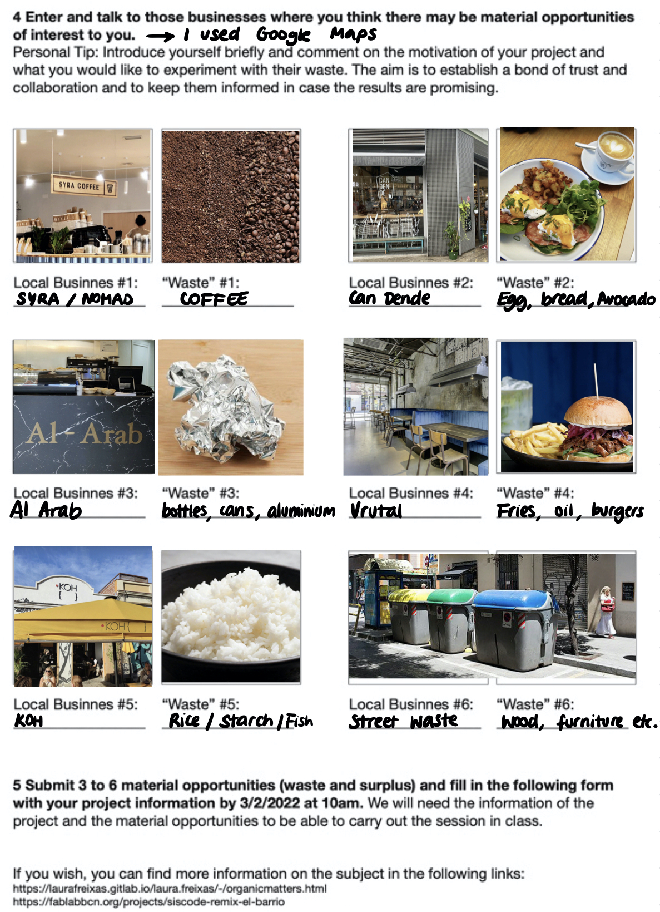
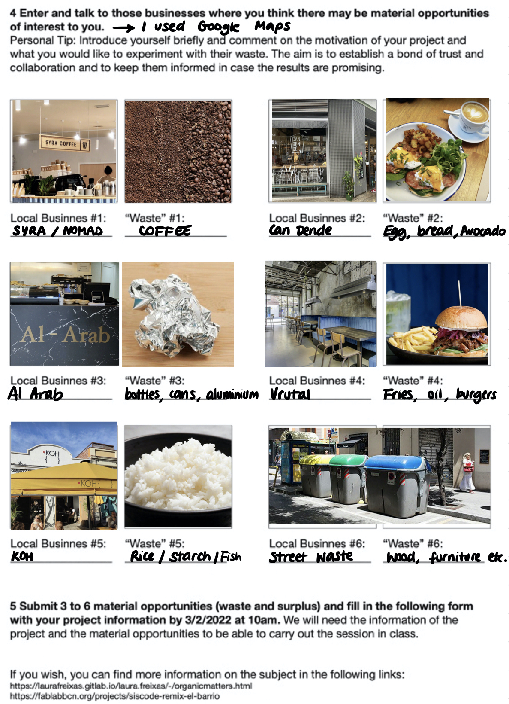

Remixing Materials
Mapping out where to get waste in Poblenou
Here is the exercise sheet that Lara asked us to fill in:
 

It was hard for me to complete this exercise in the way which Lara planned us to, because I was still in quarantine in my room, unable to visit the restaurant & shops in person. Therefore, I used Google Maps and tried to located businesses I already knew, but also tried to find something new. I am not sure what materials I would like to experiment with specifically, but I do know that I would like to find practical projects that could also be scalable.